Abra o Tinkercad
Foto da tela.
No navegador, vá para tinkercad.com.
Esta é a página de entrada. No canto de cima à direita há dois botões: Fazer login, para quem já tem conta, e Inscrever-se, para criar uma.
Clique em Fazer login e entre com a sua conta.
Sem entrar, você até consegue mexer, mas nada fica salvo: ao fechar a aba, a peça some.
- Não tenho conta
- Chame o professor. Se a escola te deu um código de turma, ele vai te dizer onde usá-lo — não clique em Inscrever-se por conta própria.
- Esqueci minha senha
- Chame o professor antes de criar outra conta. Conta nova começa vazia, e o que você fez na aula passada fica na antiga.
- Minha página abriu em inglês
- Acontece quando o navegador está configurado em outro idioma. Role até o rodapé da página e troque o idioma para Português: todos os nomes desta aula são os de português.
Clique no botão Criar


O clipe repete sozinho. Repare onde o cursor vai antes de clicar.
Foto da tela.
No canto de cima à direita, ao lado da bolinha da sua conta, clique no botão branco + Criar.
Abre um menuzinho com três linhas.
- Não acho o botão Criar
- Ele fica na faixa azul do alto da página, bem à direita, logo antes da bolinha da sua conta. Se a janela estiver estreita, aumente o tamanho dela.
- Cliquei e não abriu nada
- Clique uma vez só, em cima da palavra Criar. Dois cliques rápidos abrem e fecham o menu na mesma hora.
- Abriu outra coisa
- Você clicou na bolinha da conta, que fica ao lado. Feche apertando Esc e clique um pouco mais para a esquerda.
Escolha Projeto 3D

Foto da tela.
No menuzinho que abriu, clique na primeira linha: Projeto 3D — a do desenho de cubo, marcada de vermelho na figura.
As outras duas são outros mundos do Tinkercad: Circuitos é para montar circuito com fio e placa, e Codeblocks é para construir peça com blocos de programação. Hoje é a primeira.
O Tinkercad abre o editor e já dá ao seu projeto um nome sorteado, meio esquisito, tipo Shiny Jaban-Turing. Deixe assim: no último passo você troca.
- Cliquei em Circuitos sem querer
- Volte com a seta ⟵ do navegador e clique de novo em + Criar, escolhendo a primeira linha.
- A tela ficou branca e não carrega
- O Tinkercad é pesado. Espere até meio minuto. Se continuar branca, recarregue com F5.
- Abriu um projeto que eu já tinha
- Você clicou numa capa da lista em vez do botão. Volte e use o + Criar do canto de cima.
Conheça a tela
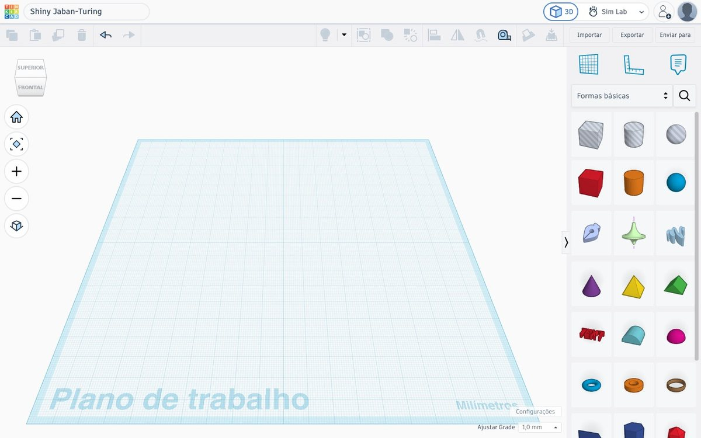
Foto da tela.
Antes de construir, repare em quatro lugares:
1. O plano azul quadriculado do meio é a sua mesa de trabalho. É em cima dele que tudo acontece.
2. A coluna da direita é a palheta de formas: cubo, cilindro, esfera, cone, letras. É de lá que você puxa as peças.
3. A barra da esquerda tem a casinha (volta a câmera para a posição inicial), o + e o − (aproxima e afasta).
4. No canto de cima à esquerda está o nome do projeto, aquele sorteado. O Tinkercad salva sozinho o tempo todo; você não precisa apertar nada para salvar.
- Minha coluna de formas está fechada
- Clique na setinha › que fica na beirada direita do plano, na metade da altura.
- O plano está torto ou muito longe
- Clique na casinha da barra da esquerda: ela devolve a câmera para a posição de começo.
- Está tudo em inglês
- Role a página até o rodapé e troque o idioma para Português. Os nomes desta aula são os de português.
Arraste uma Caixa para o plano
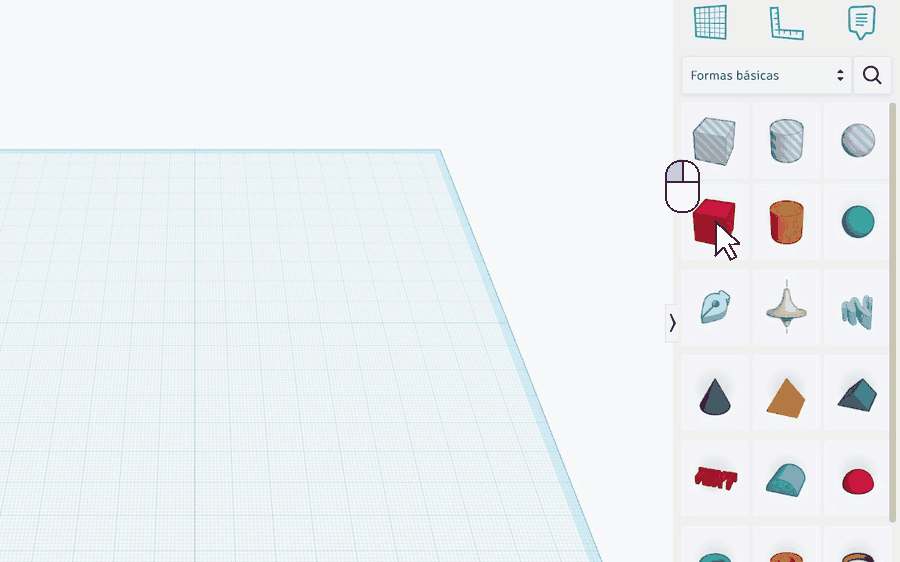
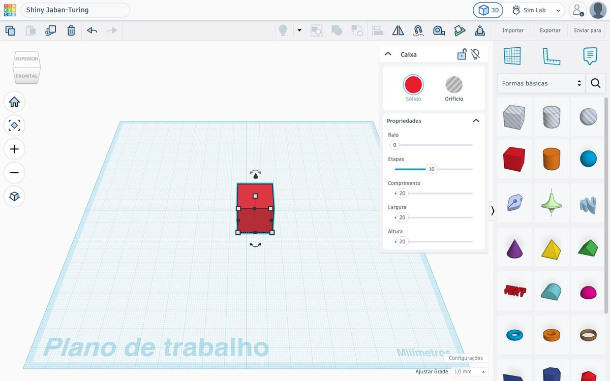
O clipe repete sozinho. Repare onde o cursor vai antes de clicar.
Foto da tela.
Na coluna da direita, a primeira forma de cima é o cubo vermelho, com o nome Caixa embaixo.
Segure o botão esquerdo em cima dele, arraste até o meio do plano e solte.
Um cubo vermelho aparece no plano, já selecionado — dá para ver os quadradinhos brancos nos cantos dele.
- Arrastei e não caiu nada
- Segure o botão um instante antes de começar a arrastar. Soltar muito rápido o Tinkercad entende como clique.
- Peguei o cilindro
- Sem problema: clique nele e aperte Delete, depois pegue o cubo, que é a primeira forma da coluna.
- Caiu fora do plano
- Clique em cima dele e arraste para dentro do quadriculado. Peça fora do plano não entra na peça final.
Veja o painel de propriedades
Foto da tela.
Com a caixa selecionada, abriu um painel branco no canto de cima à direita do plano. Ele é o painel da forma, e aqui é onde a modelagem de verdade acontece.
Repare em duas partes:
1. Em cima, duas bolinhas: Sólido (a vermelha, marcada) e Orifício (a listrada). Guarde esse par — no passo 14 ele é a aula inteira.
2. Embaixo, em Propriedades, três campos com número: Comprimento, Largura e Altura. Todos marcam 20, porque a caixa nasce com 20 mm de lado.
É digitando nesses três campos que a gente dá à peça o tamanho que quer — não puxando os quadradinhos com o mouse. Número é exato; mão treme.
- O painel sumiu
- Você clicou fora da caixa e ela foi desmarcada. Clique uma vez em cima da caixa e o painel volta.
- Meu painel mostra Lados e Chanfro
- Isso é o painel do cilindro, não o da caixa — e ele não tem campo de comprimento nenhum. Apague a peça com Delete e pegue a primeira forma da coluna, o cubo.
- Os campos estão acinzentados
- Clique uma vez dentro do campo para ele aceitar número.
Comprimento = 30
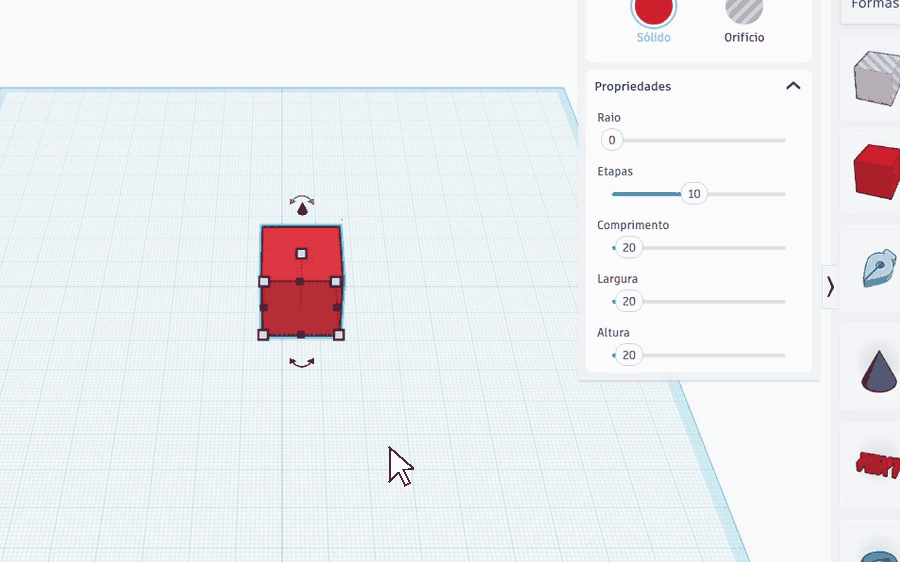
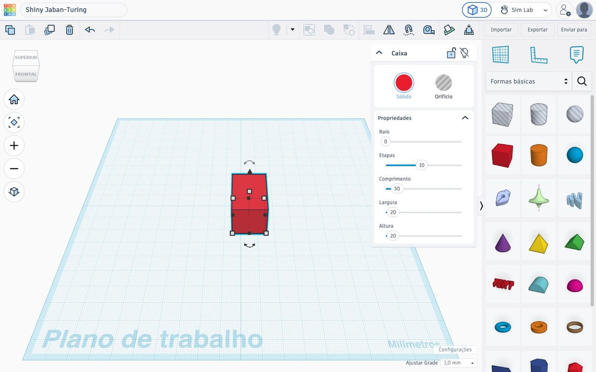
O clipe repete sozinho. Repare onde o cursor vai antes de clicar.
Foto da tela.
No painel, clique dentro do campo Comprimento, apague o 20 e escreva 30. Aperte Enter.
A caixa fica mais funda — ela cresce na direção que vai para longe de você na tela.
Esses 30 mm vão ser a altura da plaquinha de cima a baixo, a medida que dá espaço para as letras não ficarem espremidas.
- Apertei Enter e voltou para 20
- O campo não tinha sido selecionado. Dê dois cliques dentro dele para marcar o número todo e escreva por cima.
- Digitei 30 e a caixa não mudou
- Falta o Enter, ou falta clicar fora do campo. O Tinkercad só aplica quando você confirma.
- Escrevi 300 sem querer
- A caixa virou uma lousa gigante. Escreva 30 de novo e aperte Enter; nada quebrou.
Largura = 90 (o lado comprido)
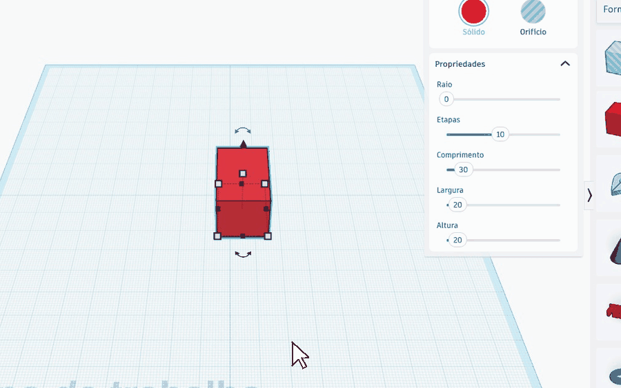
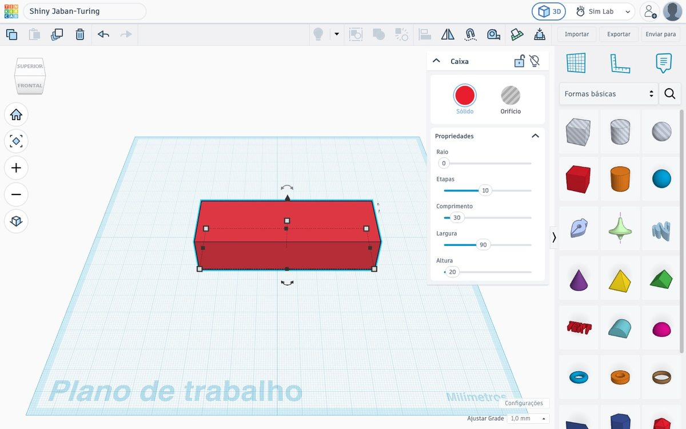
O clipe repete sozinho. Repare onde o cursor vai antes de clicar.
Foto da tela.
Agora o campo Largura: apague o 20 e escreva 90. Aperte Enter.
A caixa se estica para os lados e vira uma plaquinha deitada. Esse é o lado comprido, o que vai receber o nome.
Olhe para o nome dos campos e desconfie: o lado comprido da sua peça saiu do campo chamado Largura, não do chamado Comprimento. Não é erro seu nem do Tinkercad: comprimento e largura aqui são só os nomes de duas direções fixas da mesa — uma vai para longe de você, a outra vai para os lados. Qual delas fica maior é você quem decide.
- Minha plaquinha ficou apontando para longe, em pé na tela
- Você trocou os dois números: pôs o 90 no Comprimento. Ponha 30 no Comprimento e 90 na Largura. Se ficar como está, no passo 10 o nome vai entrar atravessado na peça.
- A plaquinha saiu da tela
- Ela cresceu mais que a janela. Clique no − da barra da esquerda duas vezes para afastar a câmera.
- Digitei 90 na Altura
- Virou um bloco alto em vez de uma plaquinha. Ponha a Altura de volta em 20 por enquanto — o passo 9 cuida dela.
Altura = 4 (fina feito uma plaquinha)
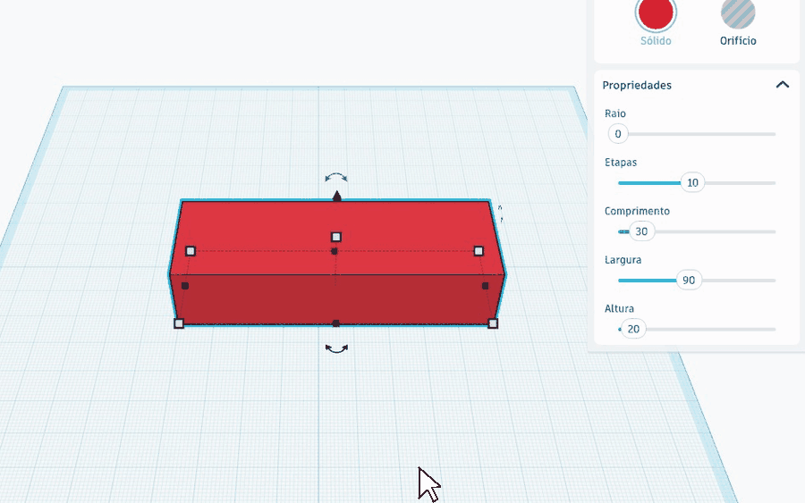
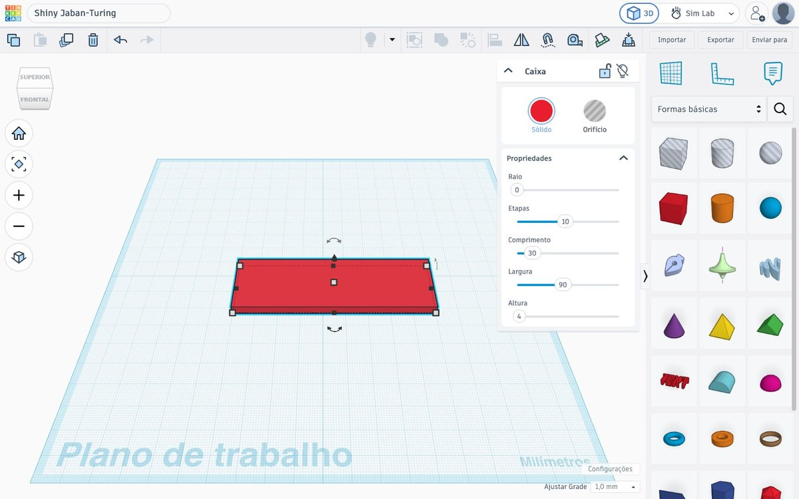
O clipe repete sozinho. Repare onde o cursor vai antes de clicar.
Foto da tela.
Último campo: Altura. Apague e escreva 4. Aperte Enter.
O bloco murcha e vira uma plaquinha fina, de 4 mm — a espessura de um chaveiro de verdade.
Pronto: 90 × 30 × 4. A sua peça já tem as três medidas, e todas foram você que escolheu.
- Ficou fina demais para ver
- Está certo: 4 mm é fino mesmo. Clique no + da barra da esquerda para aproximar.
- Escrevi 0
- O Tinkercad não aceita zero e devolve o número anterior. Escreva 4.
- Quero mais grossa
- Pode: 5 ou 6 também funciona. Só não passe de 8, senão o furo do passo 15 precisa descer mais do que a aula manda.
Arraste a forma Texto para cima da plaquinha
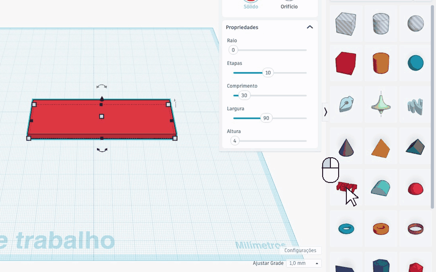
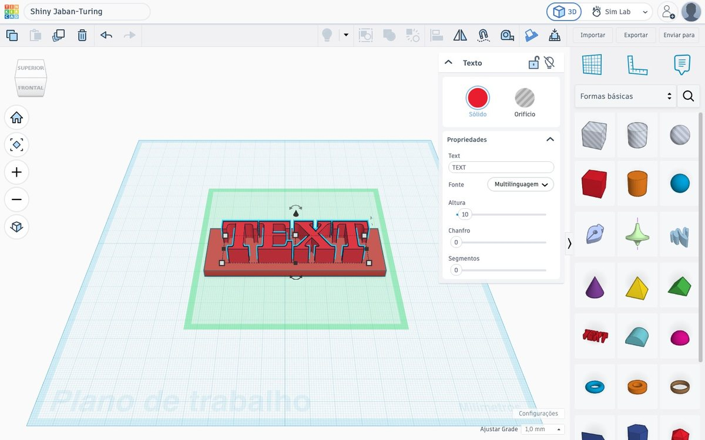
O clipe repete sozinho. Repare onde o cursor vai antes de clicar.
Foto da tela.
Role a coluna da direita até achar a forma Texto — é a que já vem com umas letras vermelhas desenhadas nela.
Arraste ela e solte bem no meio da plaquinha.
Vai aparecer a palavra TEXT em pé sobre a peça, e um quadrado verde claro embaixo. Esse quadrado verde não é defeito: é o Tinkercad avisando que você soltou uma peça em cima da face de outra, e que agora aquela face virou a mesa. Ele some sozinho mais adiante.
- Apareceu um quadrado verde e eu me assustei
- É só um plano de trabalho novo, criado na face de cima da plaquinha. Ele some e não atrapalha nada.
- O TEXT caiu fora da plaquinha
- Clique em cima da palavra e arraste até o meio da peça. Se ela não chegar lá, afaste a câmera com o −.
- Não acho a forma Texto
- Role a coluna da direita para baixo. Ela fica umas quatro fileiras abaixo do cubo, com umas letras vermelhas inclinadas.
Escreva o seu nome no campo Text
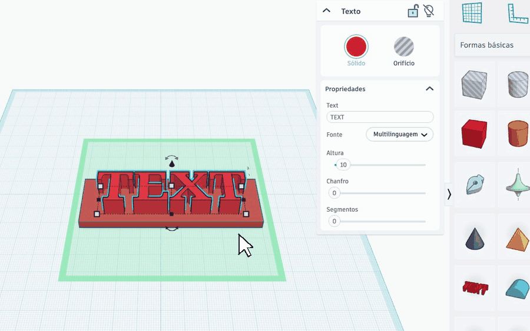
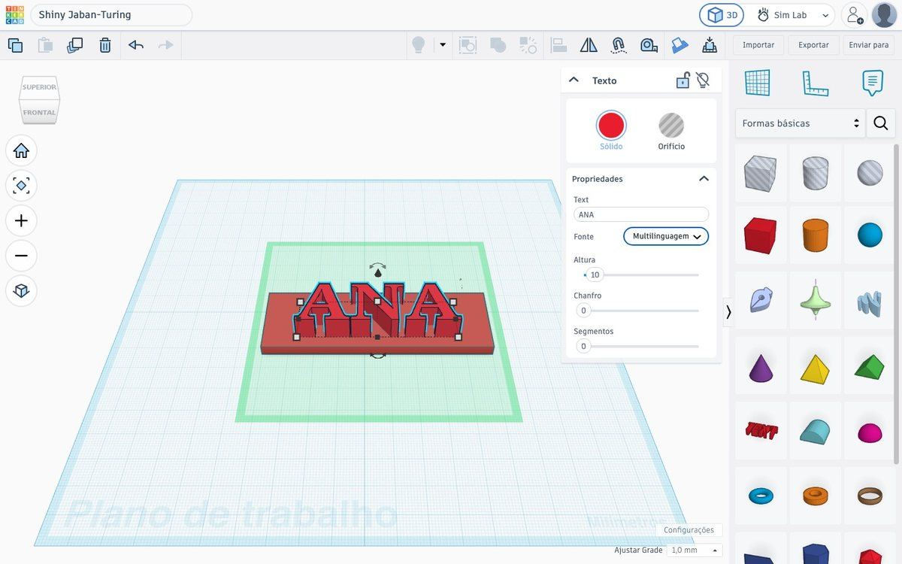
O clipe repete sozinho. Repare onde o cursor vai antes de clicar.
Foto da tela.
No painel da direita, o primeiro campo se chama Text — em inglês mesmo, no meio de um painel todo em português. Ele está logo abaixo das duas bolinhas, e dentro dele está escrito TEXT.
Clique dentro do campo, apague e escreva o seu nome, em maiúsculas. Aperte Tab.
As letras em relevo na plaquinha trocam na hora.
Nome curto cabe folgado. Se o seu for comprido, a aula continua igual — o passo 12 avisa o que fazer.
- Não acho o campo Text
- Procure a palavra em inglês: Text, sem o O. A palavra Texto que aparece mais acima é o título do painel, o nome da forma — aquilo não é campo, não dá para escrever nele.
- Meu nome ficou maior que a plaquinha
- Duas saídas: ou aumente a Largura da plaquinha (volte ao passo 8 e ponha 120), ou clique na palavra e puxe um quadradinho branco do canto para encolher as letras.
- As letras ficaram atravessadas na peça
- A plaquinha está virada: volte ao passo 8 e confira Largura em 90 e Comprimento em 30.
- Apertei Enter e fechou tudo
- Nada se perdeu. Clique na palavra de novo e o painel volta.
Traga uma segunda Caixa para a ponta esquerda
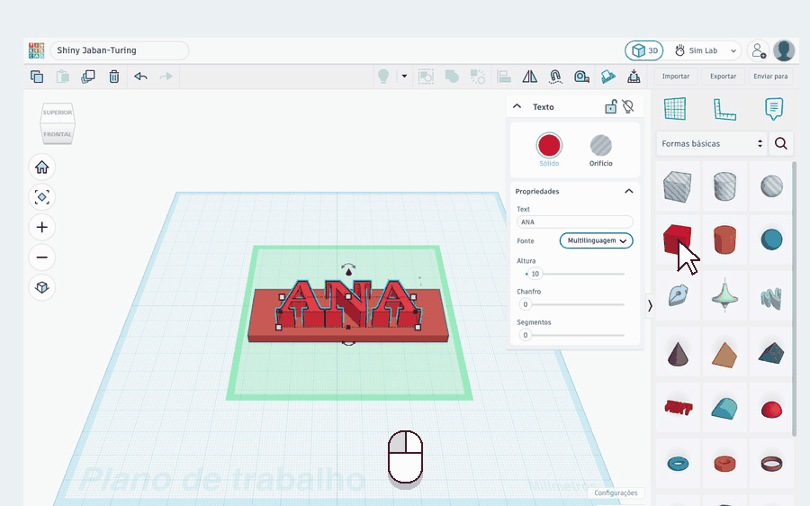
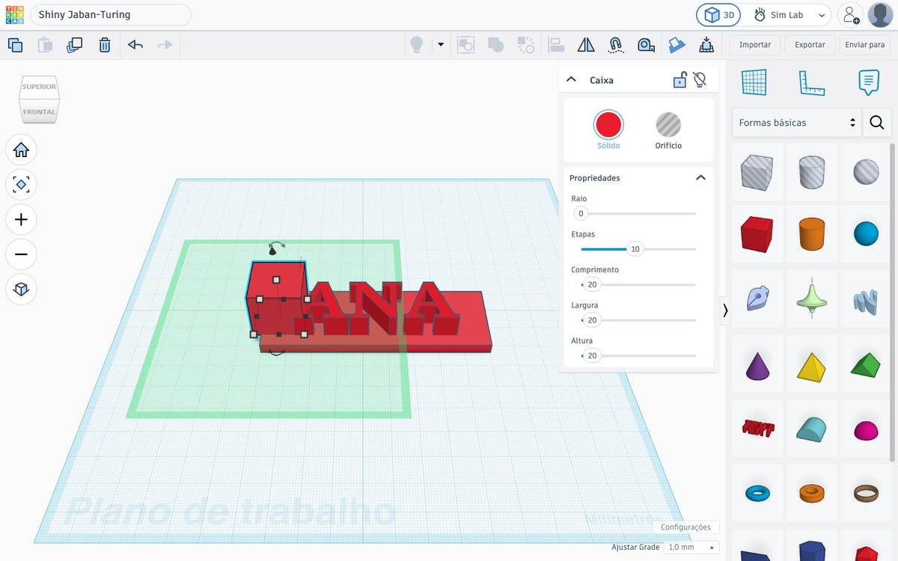
O clipe repete sozinho. Repare onde o cursor vai antes de clicar.
Foto da tela.
Agora o furo da argola. E aqui vem a ideia mais bonita do Tinkercad: para fazer um buraco, você põe uma peça.
Volte à coluna da direita, pegue o Caixa de novo e solte na ponta esquerda da plaquinha, no espaço vazio antes da primeira letra.
Ela cai em cima da peça, grandona. É assim mesmo — os dois próximos passos arrumam o tamanho e a altura.
- Solte em cima da letra sem querer
- Clique no cubo novo e arraste para a ponta vazia. Se encostar nas letras, o furo vai comer um pedaço do seu nome.
- Por que não um cilindro, para o furo ficar redondo?
- Porque o painel do cilindro só tem Lados, Chanfro e Segmentos — ele não tem campo de comprimento nem de largura, e você não conseguiria dar o tamanho exato. E furo não precisa ser redondo: quadrado segura argola igual.
- Ele sumiu atrás da plaquinha
- Clique na casinha da barra da esquerda para voltar a câmera ao lugar de sempre.
Encolha a caixinha para 8 × 8
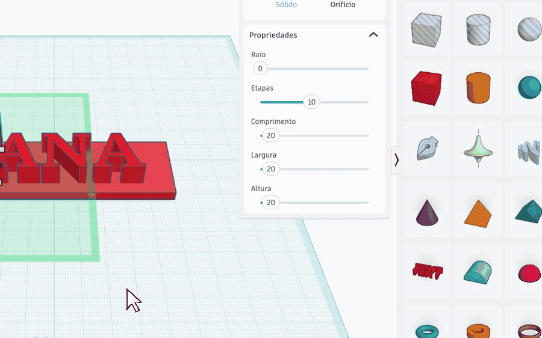
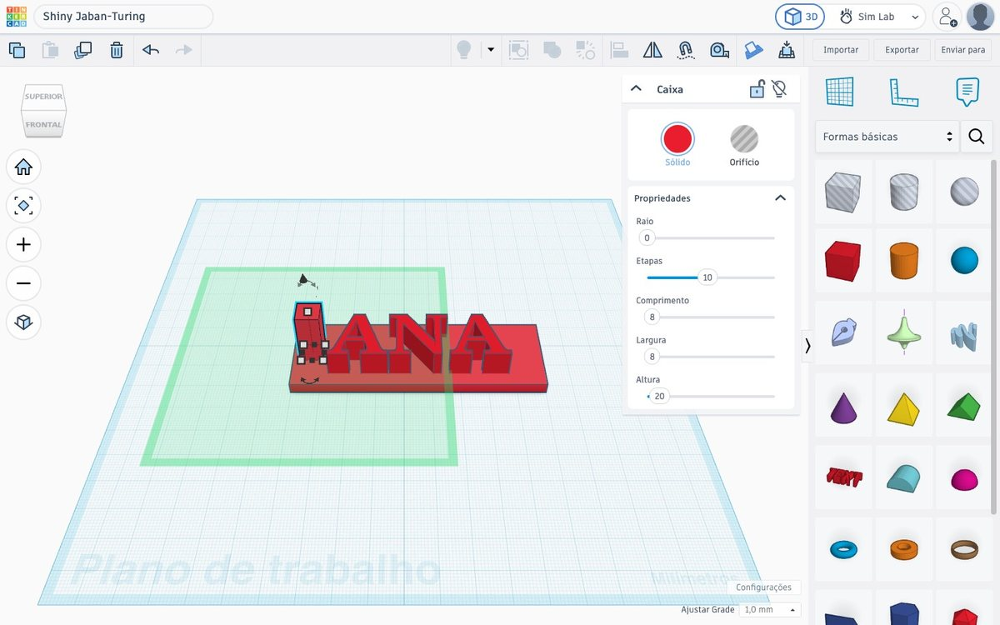
O clipe repete sozinho. Repare onde o cursor vai antes de clicar.
Foto da tela.
Com a caixinha nova selecionada, no painel da direita:
1. Comprimento: escreva 8 e aperte Enter.
2. Largura: escreva 8 e aperte Enter.
A Altura deixe como está, em 20. Ela precisa ser mais alta que a plaquinha — você vai entender no passo 15.
Agora é um palitinho fino de 8 × 8 mm em pé na ponta da peça. É o tamanho de um furo que a argola de chaveiro atravessa.
- Mudei a Altura para 8 também
- Então o furo pode ficar raso. Ponha a Altura de volta em 20.
- Mudei o tamanho da plaquinha sem querer
- Você estava com a peça errada selecionada. Clique uma vez no palitinho e confira: o painel tem de mostrar 8, 8 e 20.
- O palitinho ficou encostado nas letras
- Clique nele e arraste um pouco mais para a esquerda, para o espaço vazio.
Transforme a caixinha em Orifício
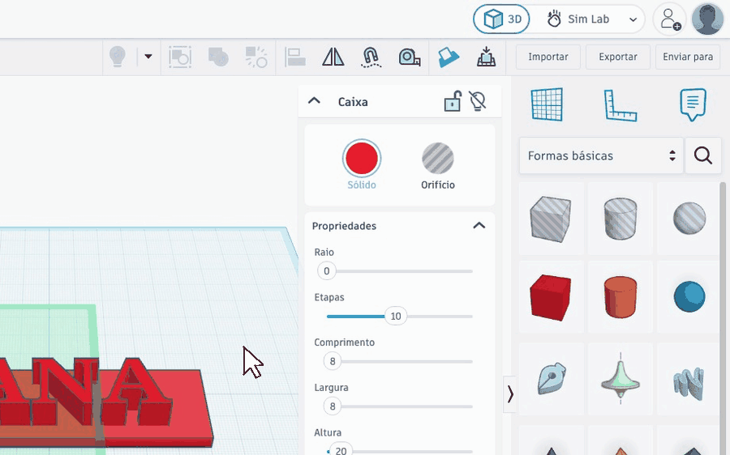
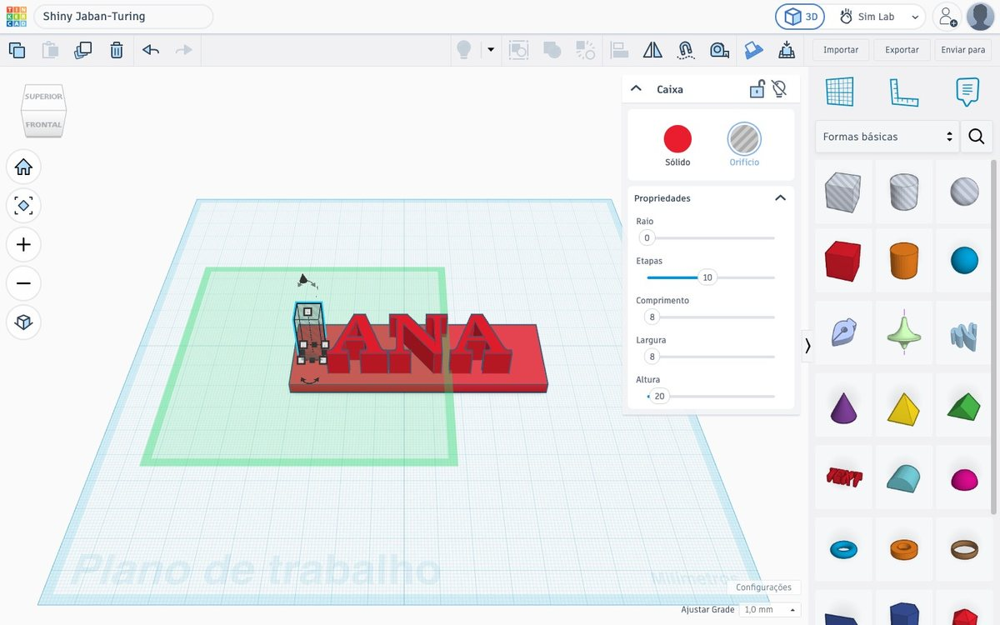
O clipe repete sozinho. Repare onde o cursor vai antes de clicar.
Foto da tela.
Aqui está o truque que faz o Tinkercad inteiro funcionar.
No alto do painel, ao lado da bolinha vermelha Sólido, clique na bolinha listrada, escrita Orifício.
O palitinho fica listradinho e transparente. Ele não virou buraco ainda — ele virou uma peça com a função de cavar. Quem cava é o passo 17.
Toda peça do Tinkercad pode ser as duas coisas: material que soma, ou vazio que subtrai. É com isso que se faz anel, caneca, encaixe, engrenagem.
- Não acho a bolinha Orifício
- Ela é a segunda das duas bolinhas do alto do painel, a da direita, com riscos diagonais. A palavra embaixo dela é pequena.
- Cliquei e a plaquinha inteira ficou listrada
- Você estava com a plaquinha selecionada, não com o palitinho. Clique na bolinha Sólido para desfazer, depois clique no palitinho e tente de novo.
- Ficou listrado mas não apareceu buraco nenhum
- Está certo assim. O buraco só aparece no passo 17, quando as peças forem juntadas.
Faça o furo DESCER: Ctrl + ↓, seis vezes
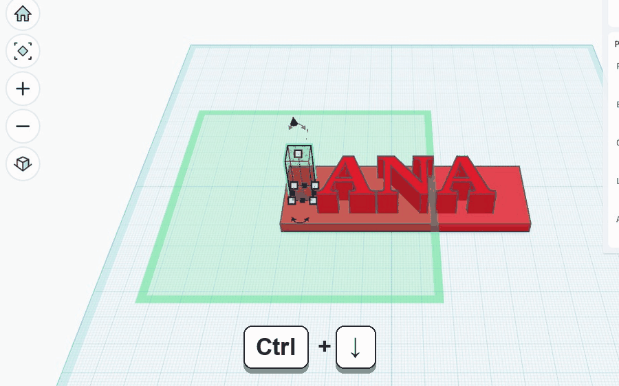
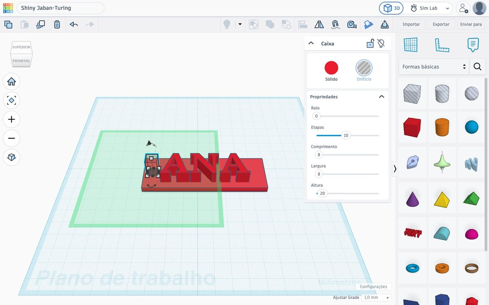
O clipe repete sozinho. Repare onde o cursor vai antes de clicar.
Foto da tela.
Este é o passo que ninguém adivinha — e sem ele a peça sai errada.
Lembra do quadrado verde do passo 10? Quando você soltou a caixinha em cima da plaquinha, o Tinkercad pôs a mesa no alto dela. Então o seu furo não está dentro da plaquinha: ele está pousado em cima, só encostando. Juntar assim não cava nada.
Com o palitinho ainda selecionado, segure Ctrl e aperte a seta para baixo ↓ seis vezes. Cada toque desce 1 mm.
Olhe a animação: o palitinho afunda e atravessa a plaquinha, sobrando um pedacinho embaixo. É isso que você quer. Um furo tem de sair do outro lado.
Em computador Mac, use Ctrl do mesmo jeito — nesse atalho ele vale nos dois.
- Apertei a seta e a peça andou para o lado
- Você soltou o Ctrl. Seta sozinha anda no plano; com Ctrl é que sobe e desce. Traga a peça de volta com a seta contrária e tente de novo segurando o Ctrl.
- Desceu demais e sumiu
- Aperte Ctrl e a seta para cima ↑ algumas vezes até ele reaparecer.
- Não sei se atravessou
- Gire a câmera: segure o botão direito do mouse em cima do plano e arraste um pouquinho. Olhando de lado dá para ver se a pontinha sai por baixo.
- Não desce nada
- Clique uma vez no palitinho antes, para selecioná-lo. Atalho de teclado só vale para a peça que está marcada.
Selecione tudo: Ctrl + A
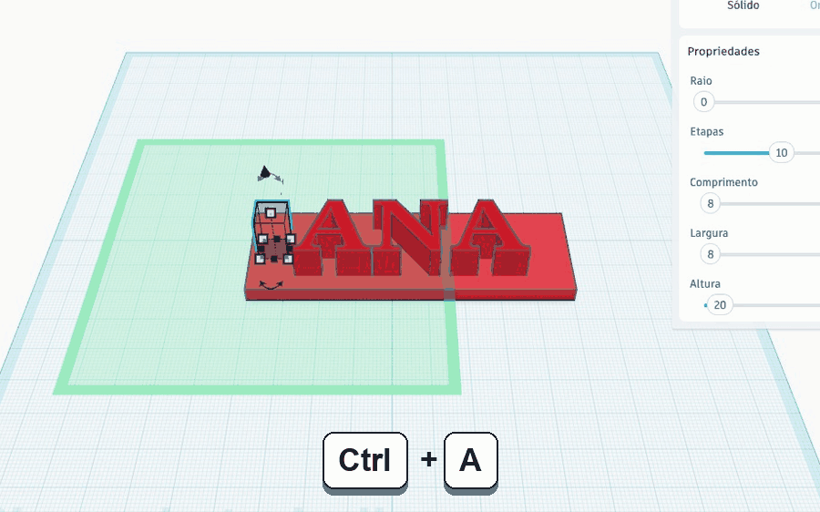
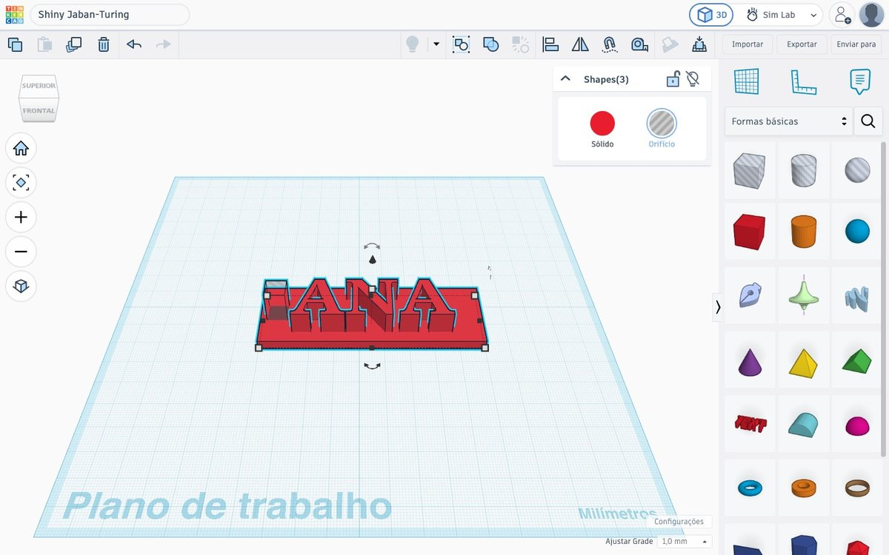
O clipe repete sozinho. Repare onde o cursor vai antes de clicar.
Foto da tela.
Agora é hora de juntar as três peças: a plaquinha, as letras e o furo.
Clique uma vez num espaço vazio do plano, para nada ficar marcado. Depois segure Ctrl e aperte A.
Tudo que está no plano fica selecionado de uma vez: aparece um retângulo pontilhado em volta do conjunto inteiro.
Em computador Mac, é Cmd + A.
- O painel diz Shapes(2)
- Faltou uma peça. Quase sempre é o furo, que foi parar longe. Clique em cada pedaço com Shift apertado para marcar os três na mão.
- Marcou coisa que eu não quero
- Clique num espaço vazio para desmarcar tudo e comece de novo. Se tiver peça sobrando no plano, apague com Delete antes.
- Ctrl + A não faz nada
- Clique uma vez dentro do plano antes, para o teclado ir para lá.
Agrupe: Grupo de união
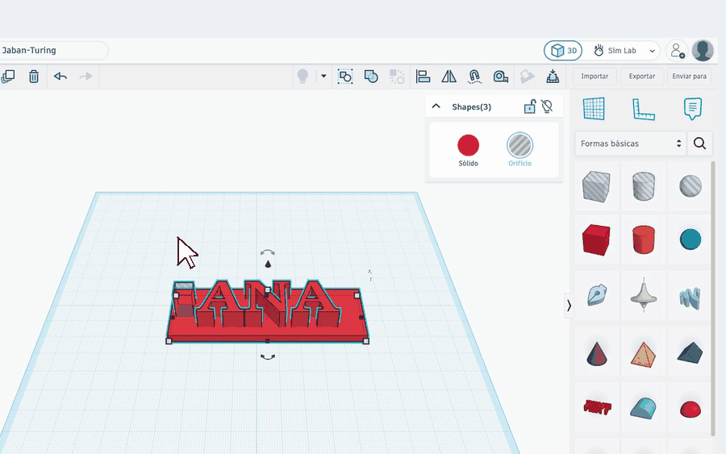
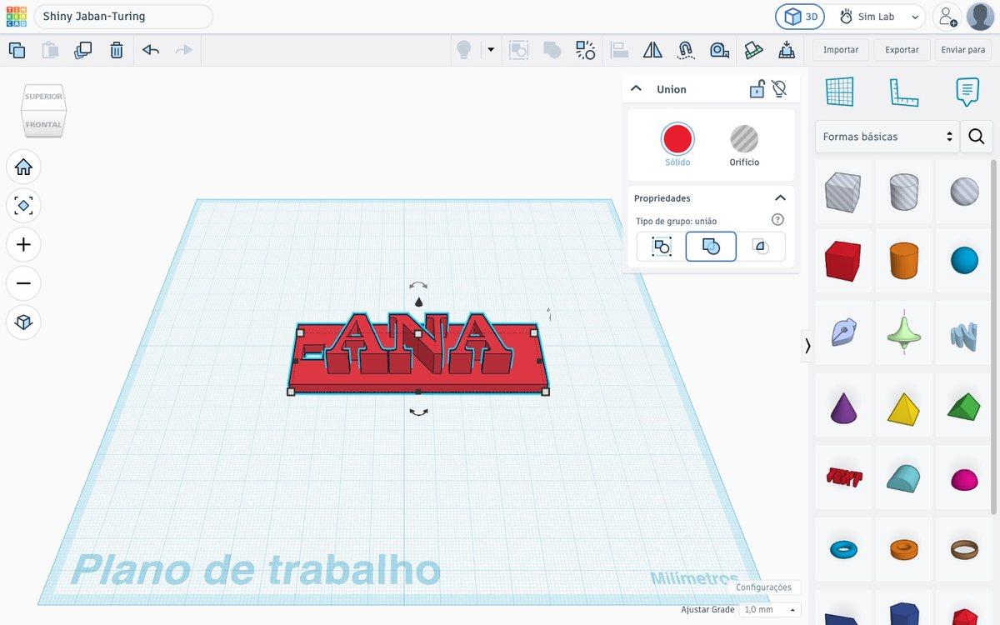
O clipe repete sozinho. Repare onde o cursor vai antes de clicar.
Foto da tela.
Na barra de cima, à direita do meio, há três botõezinhos de juntar peças. Passe o mouse em cima deles sem clicar: aparece o nome de cada um.
Clique no do meio, Grupo de união. É esse — o da esquerda é Grupo do conjunto, que só amarra as peças sem fundir, e não cava furo nenhum.
Na hora, as três peças viram uma só, tudo numa cor só, e o buraco aparece.
Ficou tudo cinza ou de uma cor que você não escolheu? É normal: ao fundir, o Tinkercad adota uma cor única para a peça inteira.
Errou e quer voltar? Ctrl + Shift + G desagrupa e devolve as peças separadas, do jeito que estavam.
- Juntou mas não tem buraco
- O furo não tinha descido. Desagrupe com Ctrl+Shift+G, volte ao passo 15 e desça o palitinho com Ctrl+↓.
- Cliquei no botão errado e nada fundiu
- Você pegou o Grupo do conjunto. Desagrupe e clique no do meio, o Grupo de união.
- Sumiu o meu nome
- O furo encostou nas letras e comeu uma. Desagrupe, arraste o palitinho mais para a ponta e agrupe de novo.
- Não acho os botões
- Eles ficam na barra de cima, no grupo do meio, perto dos ícones de espelhar e alinhar. Passe o mouse devagar que o nome aparece.
Confira: dá para ver o chão pelo furo?
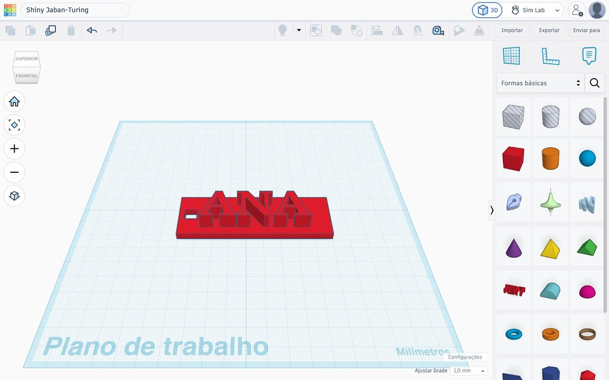
Foto da tela.
Clique num espaço vazio do plano para tirar a moldura de seleção da frente e olhe a sua peça.
Esta é a conferência da aula inteira, e é uma só: olhe pelo furo. Se dá para enxergar o quadriculado do plano através dele, o furo atravessou e a peça está certa.
Se o furo só parece um risco desenhado em cima da plaquinha, ele não atravessou — e o conserto está no quadro laranja.
- O furo parece só um risco
- Ele não atravessou. Desagrupe com Ctrl+Shift+G, clique no palitinho listrado, desça com Ctrl+↓ mais seis vezes e agrupe de novo.
- Falta uma letra do meu nome
- O furo pegou nela. Desagrupe, arraste o palitinho mais para a ponta esquerda e agrupe outra vez.
- O furo ficou enorme
- Desagrupe, clique no palitinho e ponha Comprimento e Largura em 8.
- Está tudo certo e eu quero outra cor
- Clique na peça e, no painel, clique na bolinha Sólido: abre a cartela de cores.
Gire a câmera — e volte com a casinha
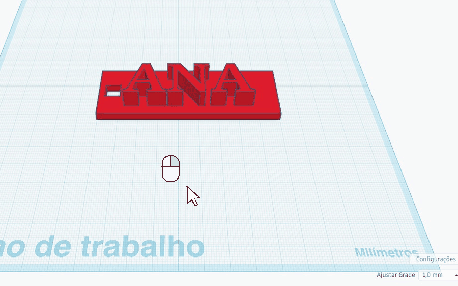
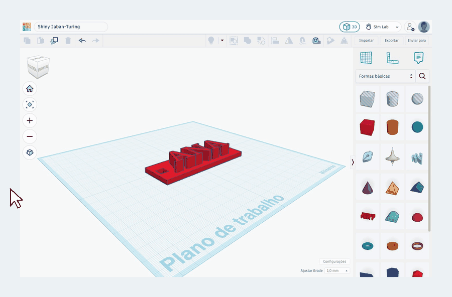
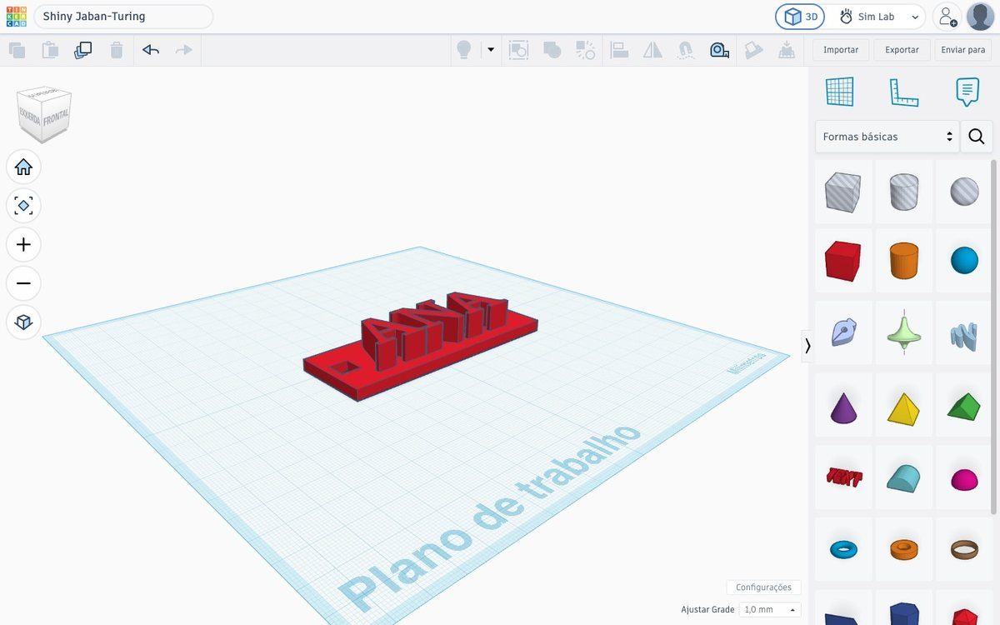
O clipe repete sozinho. Repare onde o cursor vai antes de clicar.
Foto da tela.
Sua peça é 3D de verdade, não um desenho. Prove isso:
1. Segure o botão direito do mouse em cima do plano de trabalho (o quadriculado azul) e arraste devagar. O mundo gira em volta da peça — dá para olhar de lado, de cima e por baixo. Gire até ver a peça de perfil e confira a espessura: aqueles 4 mm do passo 9 estão ali.
2. Para desfazer a bagunça, na barra da esquerda clique na casinha, a primeira figura de cima. A câmera volta na hora para a posição do começo.
Repare no primeiro clipe: é o botão direito que acende. Com o esquerdo você não gira a câmera — você arrasta a peça e tira ela do lugar.
Guarde a casinha. Ela é a saída de toda confusão de câmera: girou demais, perdeu a peça de vista, não acha nada — clique na casinha.
- Arrastei e a peça saiu do lugar
- Você usou o botão esquerdo. Desfaça com Ctrl+Z e tente com o direito.
- Meu mouse não tem botão direito
- No trackpad do notebook, use dois dedos ao mesmo tempo para arrastar. No Chromebook, segure Alt e arraste.
- Cliquei na casinha e a peça continua sumida
- Então ela ficou longe do centro do plano. Use o botão logo abaixo da casinha, o do losango, que enquadra tudo o que existe no plano.
- Cliquei no + sem querer
- Ele só aproxima. Clique no − para voltar, ou na casinha para acertar tudo de uma vez.
Dê um nome ao seu projeto
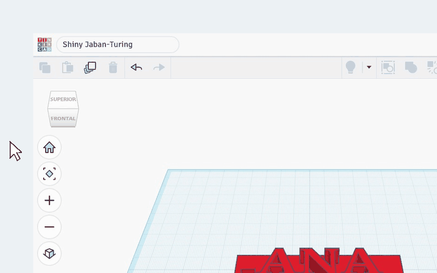
O clipe repete sozinho. Repare onde o cursor vai antes de clicar.
Foto da tela.
Falta uma coisa só. No canto de cima à esquerda está aquele nome sorteado que o Tinkercad deu no passo 3.
Clique em cima dele: o nome vira um campo de escrever. Apague e escreva Chaveiro da e o seu nome. Aperte Enter.
Não é enfeite. Daqui a um mês você vai ter dez projetos na lista, e procurar entre dez nomes sorteados é procurar agulha. O Tinkercad já salvou tudo sozinho — o que faltava era você poder achar de novo.
- Cliquei e não vira campo de escrever
- Clique bem em cima das letras do nome, não no quadradinho colorido do lado.
- Apaguei tudo e ficou sem nome
- O Tinkercad devolve o nome antigo. Clique de novo e escreva.
- Como abro isso amanhã?
- Vá em tinkercad.com, entre na sua conta, clique em Projetos na coluna da esquerda e procure pelo nome que você acabou de dar.